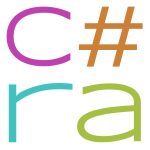

C# Reference Architecture
As device complexity continues to grow, developing test programs has become increasingly challenging. With shorter product life cycles and accelerated time-to-market demands, traditional manual coding approaches are no longer sustainable. New methodologies emphasizing reuse and automation are essential.
The C# Reference Architecture (C#RA) addresses these challenges by streamlining the creation and maintenance of test programs. It offers a robust, performance-oriented library of validated implementations that reflect recommended practice in test development.
The Library
At the heart of C#RA is a powerful abstraction layer known as Test Blocks, which enables the development of concise, generic, reusable, and intuitive test code. These blocks are designed to be modular, high-performing, and immediately understandable - minimizing the need to consult documentation.
The provided Test Methods illustrate effective and proven solutions for common test scenarios, available in both offline and online runnable demo programs. By intentionally avoiding exhaustive coverage of every edge case, the examples remain clean and approachable - making them easy to adopt and extend.
This balance allows teams to address more specific requirements while maintaining a consistent and scalable development approach.
TheLib.Setup.LevelsAndTiming.Apply(true);
Services.Setup.Apply(setup);
if (_containsDigitalPins) TheLib.Setup.Digital.Disconnect(_pins);
TheLib.Setup.Dc.Connect(_pins);
TheLib.Setup.Dc.SetForceAndMeter(_pins, TLibOutputMode.ForceCurrent, current, current, clampVoltage, Measure.Voltage, voltageRange);
TheLib.Execute.Wait(waitTime);
_meas = TheLib.Acquire.Dc.Measure(_pins);
TheLib.Setup.Dc.Disconnect(_pins);
if (_containsDigitalPins) TheLib.Setup.Digital.Connect(_pins);
TheLib.Datalog.TestParametric(_meas, current);
Comprehensive documentation complements the codebase, offering insights into the requirements process, design decisions and providing API help for deeper understanding where necessary.
Infrastructure
C#RA is built with automation at its foundation. Automated unit and integration testing, documentation generation, and packaging workflows ensure consistent quality and reduce the risk of human error.
The project follows an agile development model, allowing for rapid iteration and continuous delivery through monthly releases.
These capabilities are extended to users, enabling seamless integration into their own workflows - supporting both quality assurance and timely delivery.
Getting Started
- Download and unzip the latest release
- Review the documentation:
/doc/index.htmlor online - Understand the system requirements and prerequisites:
Documentation > Getting Startedor online - Explore the included demo program:
/Demoor online - Integrate C#RA into your test project:
Documentation > Getting Started > Installationor online - Start building better test programs - faster and more reliably!
Releases
| Release Version | Publish Date |
|---|---|
| v0.13 | 2025-11-14 |
| v0.12 | 2025-10-17 |
| v0.11 | 2025-10-10 |
| v0.10 | 2025-10-02 |
| v0.9 | 2025-09-26 |
| v0.8 | 2025-09-01 |
| v0.7 | 2025-08-01 |
| v0.6 | 2025-07-01 |
| v0.5 | 2025-06-02 |
| v0.4 | 2025-05-09 |
| v0.3 | 2025-04-01 |
| v0.2 | 2025-03-10 |
| v0.1 | 2025-02-21 |